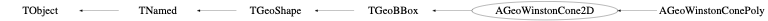

class AGeoWinstonCone2D: public TGeoBBox
AGeoWinstonCone2D Geometry class for tubes which have two aspheric surface
Function Members (Methods)
public:
| virtual | ~AGeoWinstonCone2D() |
| void | TObject::AbstractMethod(const char* method) const |
| virtual void | TGeoShape::AfterStreamer() |
| AGeoWinstonCone2D() | |
| AGeoWinstonCone2D(const AGeoWinstonCone2D&) | |
| AGeoWinstonCone2D(Double_t r1, Double_t r2, Double_t y) | |
| AGeoWinstonCone2D(const char* name, Double_t r1, Double_t r2, Double_t y) | |
| virtual void | TObject::AppendPad(Option_t* option = "") |
| static Bool_t | TGeoBBox::AreOverlapping(const TGeoBBox* box1, const TGeoMatrix* mat1, const TGeoBBox* box2, const TGeoMatrix* mat2) |
| static Double_t | TGeoShape::Big() |
| virtual void | TObject::Browse(TBrowser* b) |
| virtual Double_t | CalcdRdZ(Double_t z) const |
| virtual Double_t | CalcR(Double_t z) const |
| virtual Double_t | Capacity() const |
| void | TGeoShape::CheckShape(Int_t testNo, Int_t nsamples = 10000, Option_t* option = "") |
| static TClass* | Class() |
| virtual const char* | TObject::ClassName() const |
| virtual void | TNamed::Clear(Option_t* option = "") |
| virtual void | TGeoShape::ClearThreadData() const |
| virtual TObject* | TNamed::Clone(const char* newname = "") const |
| virtual Int_t | TNamed::Compare(const TObject* obj) const |
| virtual void | ComputeBBox() |
| static Double_t | TGeoShape::ComputeEpsMch() |
| virtual void | ComputeNormal(const Double_t* point, const Double_t* dir, Double_t* norm) |
| virtual void | TGeoBBox::ComputeNormal_v(const Double_t* points, const Double_t* dirs, Double_t* norms, Int_t vecsize) |
| virtual Bool_t | Contains(const Double_t* point) const |
| virtual void | TGeoBBox::Contains_v(const Double_t* points, Bool_t* inside, Int_t vecsize) const |
| virtual void | TNamed::Copy(TObject& named) const |
| virtual Bool_t | TGeoBBox::CouldBeCrossed(const Double_t* point, const Double_t* dir) const |
| virtual void | TGeoShape::CreateThreadData(Int_t) |
| virtual void | TObject::Delete(Option_t* option = "")MENU |
| virtual Int_t | DistancetoPrimitive(Int_t px, Int_t py) |
| virtual Double_t | DistFromInside(const Double_t* point, const Double_t* dir, Int_t iact = 1, Double_t step = TGeoShape::Big(), Double_t* safe = 0) const |
| virtual void | TGeoBBox::DistFromInside_v(const Double_t* points, const Double_t* dirs, Double_t* dists, Int_t vecsize, Double_t* step) const |
| virtual Double_t | DistFromOutside(const Double_t* point, const Double_t* dir, Int_t iact = 1, Double_t step = TGeoShape::Big(), Double_t* safe = 0) const |
| virtual void | TGeoBBox::DistFromOutside_v(const Double_t* points, const Double_t* dirs, Double_t* dists, Int_t vecsize, Double_t* step) const |
| virtual Double_t | DistToParabola(const Double_t* point, const Double_t* dir, Double_t phi, Double_t open) const |
| static Double_t | TGeoShape::DistToPhiMin(const Double_t* point, const Double_t* dir, Double_t s1, Double_t c1, Double_t s2, Double_t c2, Double_t sm, Double_t cm, Bool_t in = kTRUE) |
| virtual TGeoVolume* | Divide(TGeoVolume* voldiv, const char* divname, Int_t iaxis, Int_t ndiv, Double_t start, Double_t step) |
| virtual void | TGeoShape::Draw(Option_t* option = "")MENU |
| virtual void | TObject::DrawClass() constMENU |
| virtual TObject* | TObject::DrawClone(Option_t* option = "") constMENU |
| virtual void | TObject::Dump() constMENU |
| static Double_t | TGeoShape::EpsMch() |
| virtual void | TObject::Error(const char* method, const char* msgfmt) const |
| virtual void | TObject::Execute(const char* method, const char* params, Int_t* error = 0) |
| virtual void | TObject::Execute(TMethod* method, TObjArray* params, Int_t* error = 0) |
| virtual void | TGeoShape::ExecuteEvent(Int_t event, Int_t px, Int_t py) |
| virtual void | TObject::Fatal(const char* method, const char* msgfmt) const |
| virtual void | TNamed::FillBuffer(char*& buffer) |
| virtual TObject* | TObject::FindObject(const char* name) const |
| virtual TObject* | TObject::FindObject(const TObject* obj) const |
| virtual const char* | TGeoBBox::GetAxisName(Int_t iaxis) const |
| virtual Double_t | TGeoBBox::GetAxisRange(Int_t iaxis, Double_t& xlo, Double_t& xhi) const |
| virtual void | GetBoundingCylinder(Double_t* param) const |
| virtual const TBuffer3D& | GetBuffer3D(Int_t reqSections, Bool_t localFrame) const |
| virtual Int_t | TGeoBBox::GetByteCount() const |
| virtual Option_t* | TObject::GetDrawOption() const |
| static Long_t | TObject::GetDtorOnly() |
| virtual Double_t | TGeoBBox::GetDX() const |
| virtual Double_t | TGeoBBox::GetDY() const |
| virtual Double_t | TGeoBBox::GetDZ() const |
| virtual Double_t | TGeoBBox::GetFacetArea(Int_t index = 0) const |
| virtual Int_t | TGeoBBox::GetFittingBox(const TGeoBBox* parambox, TGeoMatrix* mat, Double_t& dx, Double_t& dy, Double_t& dz) const |
| virtual const char* | TObject::GetIconName() const |
| Int_t | TGeoShape::GetId() const |
| virtual TGeoShape* | GetMakeRuntimeShape(TGeoShape*, TGeoMatrix*) const |
| virtual void | GetMeshNumbers(Int_t& nvert, Int_t& nsegs, Int_t& npols) const |
| virtual const char* | TGeoShape::GetName() const |
| virtual Int_t | GetNmeshVertices() const |
| virtual char* | TObject::GetObjectInfo(Int_t px, Int_t py) const |
| static Bool_t | TObject::GetObjectStat() |
| virtual Option_t* | TObject::GetOption() const |
| virtual const Double_t* | TGeoBBox::GetOrigin() const |
| const char* | TGeoShape::GetPointerName() const |
| virtual Bool_t | TGeoBBox::GetPointsOnFacet(Int_t index, Int_t npoints, Double_t* array) const |
| virtual Bool_t | TGeoBBox::GetPointsOnSegments(Int_t npoints, Double_t* array) const |
| virtual Double_t | GetTheta() const |
| virtual const char* | TNamed::GetTitle() const |
| static TGeoMatrix* | TGeoShape::GetTransform() |
| virtual UInt_t | TObject::GetUniqueID() const |
| virtual Bool_t | TObject::HandleTimer(TTimer* timer) |
| virtual ULong_t | TNamed::Hash() const |
| virtual void | TObject::Info(const char* method, const char* msgfmt) const |
| virtual Bool_t | TObject::InheritsFrom(const char* classname) const |
| virtual Bool_t | TObject::InheritsFrom(const TClass* cl) const |
| virtual void | TObject::Inspect() constMENU |
| virtual void | InspectShape() const |
| void | TObject::InvertBit(UInt_t f) |
| void | TGeoShape::InvertShapeBit(UInt_t f) |
| virtual TClass* | IsA() const |
| virtual Bool_t | TGeoShape::IsAssembly() const |
| static Bool_t | TGeoShape::IsCloseToPhi(Double_t epsil, const Double_t* point, Double_t c1, Double_t s1, Double_t c2, Double_t s2) |
| virtual Bool_t | TGeoShape::IsComposite() const |
| static Bool_t | TGeoShape::IsCrossingSemiplane(const Double_t* point, const Double_t* dir, Double_t cphi, Double_t sphi, Double_t& snext, Double_t& rxy) |
| virtual Bool_t | IsCylType() const |
| virtual Bool_t | TObject::IsEqual(const TObject* obj) const |
| virtual Bool_t | TObject::IsFolder() const |
| static Bool_t | TGeoShape::IsInPhiRange(const Double_t* point, Double_t phi1, Double_t phi2) |
| virtual Bool_t | TGeoBBox::IsNullBox() const |
| Bool_t | TObject::IsOnHeap() const |
| virtual Bool_t | TGeoShape::IsReflected() const |
| Bool_t | TGeoShape::IsRunTimeShape() const |
| static Bool_t | TGeoShape::IsSameWithinTolerance(Double_t a, Double_t b) |
| static Bool_t | TGeoShape::IsSegCrossing(Double_t x1, Double_t y1, Double_t x2, Double_t y2, Double_t x3, Double_t y3, Double_t x4, Double_t y4) |
| virtual Bool_t | TNamed::IsSortable() const |
| Bool_t | TGeoShape::IsValid() const |
| virtual Bool_t | TGeoBBox::IsValidBox() const |
| virtual Bool_t | TGeoShape::IsVecGeom() const |
| Bool_t | TObject::IsZombie() const |
| virtual void | TNamed::ls(Option_t* option = "") const |
| virtual TBuffer3D* | MakeBuffer3D() const |
| void | TObject::MayNotUse(const char* method) const |
| static void | TGeoShape::NormalPhi(const Double_t* point, const Double_t* dir, Double_t* norm, Double_t c1, Double_t s1, Double_t c2, Double_t s2) |
| virtual Bool_t | TObject::Notify() |
| void | TObject::Obsolete(const char* method, const char* asOfVers, const char* removedFromVers) const |
| void | TObject::operator delete(void* ptr) |
| void | TObject::operator delete(void* ptr, void* vp) |
| void | TObject::operator delete[](void* ptr) |
| void | TObject::operator delete[](void* ptr, void* vp) |
| void* | TObject::operator new(size_t sz) |
| void* | TObject::operator new(size_t sz, void* vp) |
| void* | TObject::operator new[](size_t sz) |
| void* | TObject::operator new[](size_t sz, void* vp) |
| AGeoWinstonCone2D& | operator=(const AGeoWinstonCone2D&) |
| virtual void | TGeoShape::Paint(Option_t* option = "") |
| virtual void | TObject::Pop() |
| virtual void | TNamed::Print(Option_t* option = "") const |
| virtual Int_t | TObject::Read(const char* name) |
| virtual void | TObject::RecursiveRemove(TObject* obj) |
| void | TObject::ResetBit(UInt_t f) |
| void | TGeoShape::ResetShapeBit(UInt_t f) |
| virtual Double_t | Safety(const Double_t* point, Bool_t in = kTRUE) const |
| virtual void | TGeoBBox::Safety_v(const Double_t* points, const Bool_t* inside, Double_t* safe, Int_t vecsize) const |
| static Double_t | TGeoShape::SafetyPhi(const Double_t* point, Bool_t in, Double_t phi1, Double_t phi2) |
| static Double_t | TGeoShape::SafetySeg(Double_t r, Double_t z, Double_t r1, Double_t z1, Double_t r2, Double_t z2, Bool_t outer) |
| virtual void | TObject::SaveAs(const char* filename = "", Option_t* option = "") constMENU |
| virtual void | SavePrimitive(ostream& out, Option_t* option = "") |
| void | TObject::SetBit(UInt_t f) |
| void | TObject::SetBit(UInt_t f, Bool_t set) |
| void | TGeoBBox::SetBoxDimensions(Double_t dx, Double_t dy, Double_t dz, Double_t* origin = 0) |
| void | TGeoBBox::SetBoxPoints(Double_t* points) const |
| virtual void | SetDimensions(Double_t* param) |
| virtual void | TObject::SetDrawOption(Option_t* option = "")MENU |
| static void | TObject::SetDtorOnly(void* obj) |
| void | TGeoShape::SetId(Int_t id) |
| virtual void | TNamed::SetName(const char* name)MENU |
| virtual void | TNamed::SetNameTitle(const char* name, const char* title) |
| static void | TObject::SetObjectStat(Bool_t stat) |
| virtual void | SetPoints(Double_t* points) const |
| virtual void | SetPoints(Float_t* points) const |
| void | TGeoShape::SetRuntime(Bool_t flag = kTRUE) |
| virtual void | SetSegsAndPols(TBuffer3D& buff) const |
| void | TGeoShape::SetShapeBit(UInt_t f) |
| void | TGeoShape::SetShapeBit(UInt_t f, Bool_t set) |
| virtual void | TNamed::SetTitle(const char* title = "")MENU |
| static void | TGeoShape::SetTransform(TGeoMatrix* matrix) |
| virtual void | TObject::SetUniqueID(UInt_t uid) |
| virtual void | SetWinstonDimensions(Double_t r1, Double_t r2, Double_t y) |
| Int_t | TGeoShape::ShapeDistancetoPrimitive(Int_t numpoints, Int_t px, Int_t py) const |
| virtual void | ShowMembers(TMemberInspector& insp) const |
| virtual Int_t | TNamed::Sizeof() const |
| virtual void | Sizeof3D() const |
| virtual void | Streamer(TBuffer&) |
| void | StreamerNVirtual(TBuffer& ClassDef_StreamerNVirtual_b) |
| virtual void | TObject::SysError(const char* method, const char* msgfmt) const |
| Bool_t | TObject::TestBit(UInt_t f) const |
| Int_t | TObject::TestBits(UInt_t f) const |
| Bool_t | TGeoShape::TestShapeBit(UInt_t f) const |
| Int_t | TGeoShape::TestShapeBits(UInt_t f) const |
| static Double_t | TGeoShape::Tolerance() |
| virtual void | TObject::UseCurrentStyle() |
| virtual void | TObject::Warning(const char* method, const char* msgfmt) const |
| virtual Int_t | TObject::Write(const char* name = 0, Int_t option = 0, Int_t bufsize = 0) |
| virtual Int_t | TObject::Write(const char* name = 0, Int_t option = 0, Int_t bufsize = 0) const |
protected:
| virtual void | TObject::DoError(int level, const char* location, const char* fmt, va_list va) const |
| virtual void | TGeoBBox::FillBuffer3D(TBuffer3D& buffer, Int_t reqSections, Bool_t localFrame) const |
| Int_t | TGeoShape::GetBasicColor() const |
| void | TObject::MakeZombie() |
| void | TGeoShape::SetOnBoundary(Bool_t) |
| void | TGeoShape::TransformPoints(Double_t* points, UInt_t NbPoints) const |
Data Members
public:
protected:
| Double_t | TGeoBBox::fDX | X half-length |
| Double_t | TGeoBBox::fDY | Y half-length |
| Double_t | TGeoBBox::fDZ | Z half-length |
| Double_t | fF | Focal length |
| TString | TNamed::fName | object identifier |
| Double_t | TGeoBBox::fOrigin[3] | box origin |
| Double_t | fR1 | Half of the larger aperture |
| Double_t | fR2 | Half of the smaller aperture |
| UInt_t | TGeoShape::fShapeBits | shape bits |
| Int_t | TGeoShape::fShapeId | shape id |
| Double_t | fTheta | Cutoff angle |
| TString | TNamed::fTitle | object title |
Class Charts
{kind=link}
{kind=link}
{kind=link}
{kind=link}

Function documentation
AGeoWinstonCone2D(Double_t r1, Double_t r2, Double_t y)
AGeoWinstonCone2D(const char* name, Double_t r1, Double_t r2, Double_t y)
void ComputeNormal(const Double_t* point, const Double_t* dir, Double_t* norm)
Compute normal to closest surface from POINT.
Int_t DistancetoPrimitive(Int_t px, Int_t py)
compute closest distance from point px,py to each corner
Double_t DistFromInside(const Double_t* point, const Double_t* dir, Int_t iact = 1, Double_t step = TGeoShape::Big(), Double_t* safe = 0) const
compute distance from inside point to surface of the sphere
Double_t DistFromOutside(const Double_t* point, const Double_t* dir, Int_t iact = 1, Double_t step = TGeoShape::Big(), Double_t* safe = 0) const
compute distance from outside point to surface of the sphere
Double_t DistToParabola(const Double_t* point, const Double_t* dir, Double_t phi, Double_t open) const
TGeoVolume* Divide(TGeoVolume* voldiv, const char* divname, Int_t iaxis, Int_t ndiv, Double_t start, Double_t step)
void GetBoundingCylinder(Double_t* param) const
--- Fill vector param[4] with the bounding cylinder parameters. The order is the following : Rmin, Rmax, Phi1, Phi2
const TBuffer3D& GetBuffer3D(Int_t reqSections, Bool_t localFrame) const
Fills a static 3D buffer and returns a reference
void GetMeshNumbers(Int_t& nvert, Int_t& nsegs, Int_t& npols) const
TBuffer3D* MakeBuffer3D() const
Double_t Safety(const Double_t* point, Bool_t in = kTRUE) const
Not implemented yet. But keep this as is.
void SavePrimitive(ostream& out, Option_t* option = "")
Save a primitive as a C++ statement(s) on output stream "out".
void SetWinstonDimensions(Double_t r1, Double_t r2, Double_t y)
void SetDimensions(Double_t* param)
TGeoShape* GetMakeRuntimeShape(TGeoShape* , TGeoMatrix* ) const
virtual Int_t GetByteCount() const {return 68 + 4*(fNPol1 + fNPol2);} // to be checked
{return 0;}